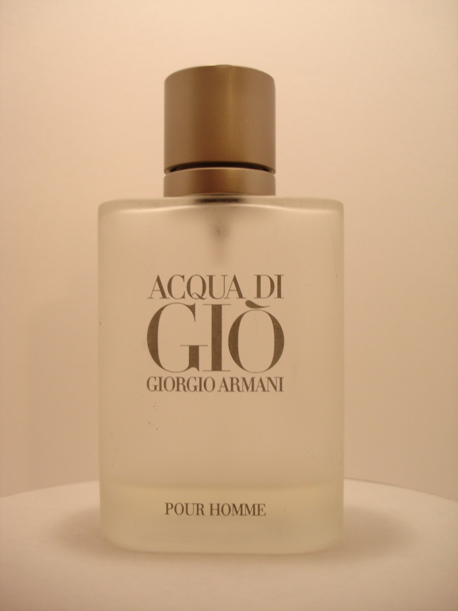

No existe una fórmula universal para el verano. Si el calor hace que los aromas dulces te resulten pesados, probá primero una salida cítrica o herbal y dejá que se asiente antes de decidir.
Cítrico y aromático
Armaf Odyssey Aqua
Su ficha oficial describe una salida de toronja, naranja y artemisa, seguida por lavanda y menta, con ciprés, pachulí y ambroxan al fondo. Si te gustan los cítricos con un centro herbal, es un buen candidato para comparar durante el día o en un ambiente de oficina.
La marca lo ubica entre sus opciones de día, oficina, uso casual y verano. Es una orientación del fabricante: probalo en tu piel y en el clima donde pensás llevarlo.
Frutal y acuático
Rasasi Hawas Ice
Rasasi enumera manzana, bergamota, limón y anís en la salida; después aparecen acorde marino, flor de azahar, ciruela y cardamomo. El fondo suma almizcle, ámbar, madera flotante y musgo cristalino. Puede interesarte si buscás una impresión frutal y marina con un fondo amaderado.
La descripción no significa que sea ligero para todo el mundo: si te molestan los perfumes intensos o dulces, empezá con una sola aplicación y observá cómo evoluciona.
Tropical y cremoso
Lattafa Yara Tous
La ficha de Lattafa USA lista mango, coco y maracuyá, con jazmín, heliotropo y flor de azahar; la base incluye vainilla, almizcle y cashmeran. Es una alternativa para quien disfruta los frutos tropicales y prefiere un lado dulce y cremoso a un cítrico seco.
En la referencia local del catálogo aparece como una variante de Yara; el precio mostrado proviene de un comercio externo y puede cambiar.
Antes de comprar
Cómo probar un perfume con calor
- Probá una fragancia a la vez en la piel, no solo en una tira de papel.
- Empezá con poca cantidad; si te gusta después de un rato, ajustá la aplicación otro día.
- Si vas a comprar una botella grande, preguntá por una muestra o decant cuando esté disponible.
- Compará la misma presentación, tamaño y concentración; las referencias de precio no son ofertas de este sitio.